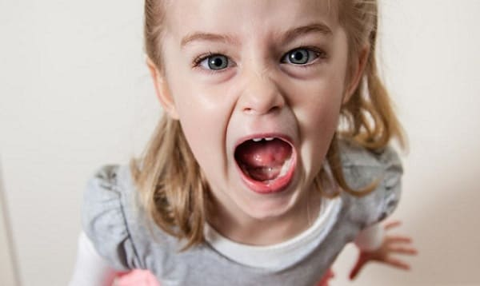

Дети в возрасте от 1 до 2 лет больше кричат по двум причинам:
• малышам нравится опробовать свой голос, и их забавляет громкость и мощность звуков, которые они издают;
• им также нравится действие, которое эти «сирены» производят на окружающих.
ЧТО ДЕЛАТЬ
Когда малыш понимает, сколько мощи у него в голосе, крик может стать пронзительным. Вот как можно приглушить своего маленького крикуна.
Отследите спусковой механизм. Как и при проявлении других досаждающих манер у малышей, например, кусании и драчливости, записывайте обстоятельства, которые провоцируют крик, и по возможности избегайте их.
Используйте свой милый голос. Дети буду проверять, на какие звуки, издаваемые ими, они получат лучшую реакцию. Чем громче кричит ребенок, тем мягче должен быть ваш ответ. Так он сможет понять, что он скорее получит желаемое, используя свой обычный голос. Когда ваш ребенок в совершенстве овладеет языком и жестами, употребляемыми при общении, и поймет, что «милый голос» является более эффективным, общение при помощи крика уйдет в прошлое.
«Мы кричим только на траве». Попробуйте хитрость, к которой мы прибегаем, чтобы успокоить наших маленьких крикунов. Как только ваш ребенок собирается закричать, быстро прервите его, сказав мягким голосом: «Мы кричим только на траве», — и быстро подтолкните вашего маленького крикуна на улицу, чтобы он дал выход накопившимся у него звукам. |
Здоровье ребенка от докторов Сирс / Сирс У. и др.